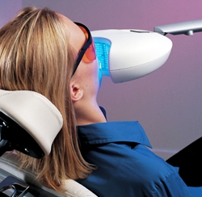

Everyone wants to stand out of the crowd but having a discoloured tooth that stands out from rest of the team is not something appealing. In such cases you may want to consider having the tooth whitened to match the rest. The medical treatment in India has surged to meet and greet you with the finest of dental services.
How white an individual tooth can become from bleaching and whitening is a common question. Some whitening procedures claim they can whiten your teeth by up to nine shades, but that is highly unlikely. A change of two or three shades alone makes a significant difference in about anyone's smile. There is no one standard system in the dental field to measure and determine tooth colour. However, the Vita shade guide is widely used which helps to divide individual tooth colour into four basic shade ranges:
- A (reddish brown)
- B (reddish yellow)
- C (gray)
- D (reddish gray).
Several options may be discussed prior to making a decision. Since most people seek collective whitening, the laser whitening procedure provides the cosmetic dentist with needed control, and the patient the instant results sought. People usually have a tooth whitened to improve their appearance. Healthy teeth portray beauty and a healthier lifestyle. People with brighter smile are more confident and minimize the appearance of facial wrinkles.